Longren Antarctic Newsletter #12 - 12.04.2026 ------------------------------ Hello friends and family, After a couple months at the South Pole, I have begun to settle into life here. I know everyone's names and I don't get lost as much walking around the station. I've learned a lot about my job and, instead of drinking from the fire hose each day while being taught the innerworkings, I am now running the observatory together with Mike as one well-oiled machine. I'd like to show you around the South Pole and give you the lay of the land at the station. Let's first get a bird's-eye view to see what is in the neighborhood. 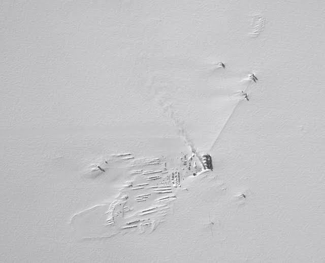 An aerial photo of the South Pole, taken by the NASA IceBridge DC-8 airplane. The big building in the center is the elevated main station. To the left of the main station is the large outdoor storage area. The three buildings in the upper- right corner are telescopes. In the lower-right is the atmospheric observatory. (M. Linkswiler) Beyond the extent of the station, there is not much! The station sits on the polar plateau, a sheet of ice that is 2 kilometers (1.2 miles) thick, on average. The ice sheet covers 98% of the continent of Antarctica. While the plateau looks quite flat from high above, that is not the case if one looks closer. 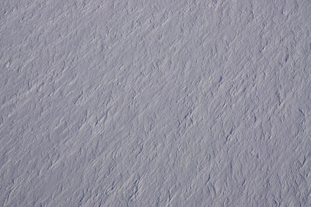 Sastrugi are the irregular bumps in the ice sheet that are formed by the wind. (B. Medley) Moving back to the station, let's see what it looks like to walk around the South Pole. It is important to clarify which pole is being talked about, as there are two in the area. Out in front of the station is the ceremonial pole, which is surrounded by flags of the countries that first signed the Antarctic treaty. However, the ceremonial pole is not the pole that the Earth spins around. That would be what is called the geographic pole. As the ice sheet slowly slides across the continent at a rate of about 10 meters (33 feet) each year, the station is moving along with it. Every New Year's day, the pole that marks the geographic South Pole is picked up and moved to indicate the correct location of the bottom of the world. 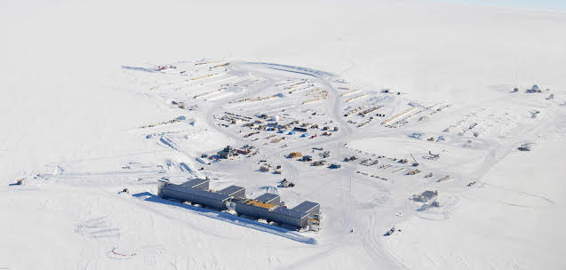 A closer view of the elevated station and the outdoor storage area behind it. (J. Warneck) Inside the elevated station is where everyone eats, sleeps, and recreates. Most people work inside the elevated station, too. As for me and the other scientists, we have to commute out to our science projects. Twice a day, I walk out to the Atmospheric Research Observatory (ARO). It has been a lovely walk, with the sun getting lower and lower in the sky each day. 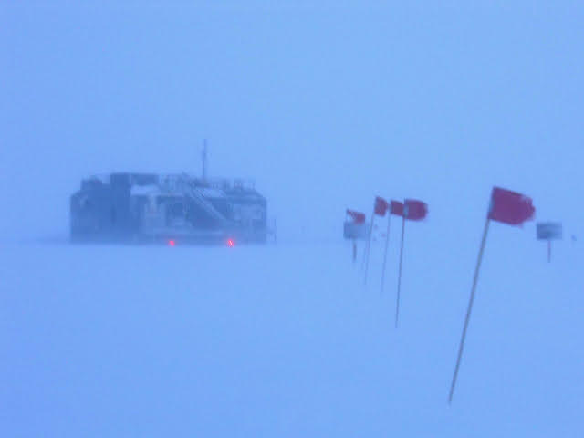 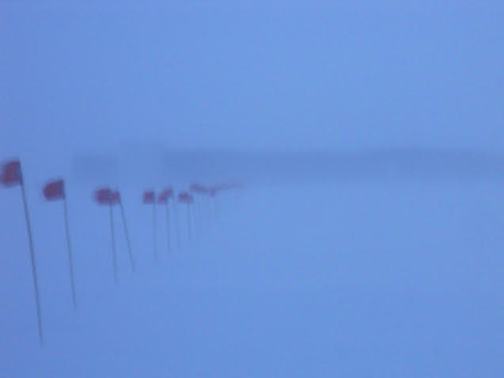 The walk out to the observatory (top) and back to the main station (bottom). Lately, I've been enjoying trying out some new things with photography. Mainly, I've given photo stacking a go, where many photos of something are merged together to form a sort of timelapse. My colleague Mike has been nice enough to let me be sneaky and take photos of him while he does his job. Here's a couple stacked photos I got of Mike over the past few months. 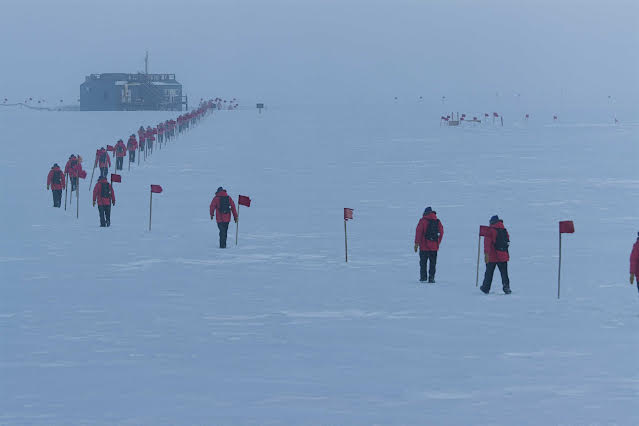 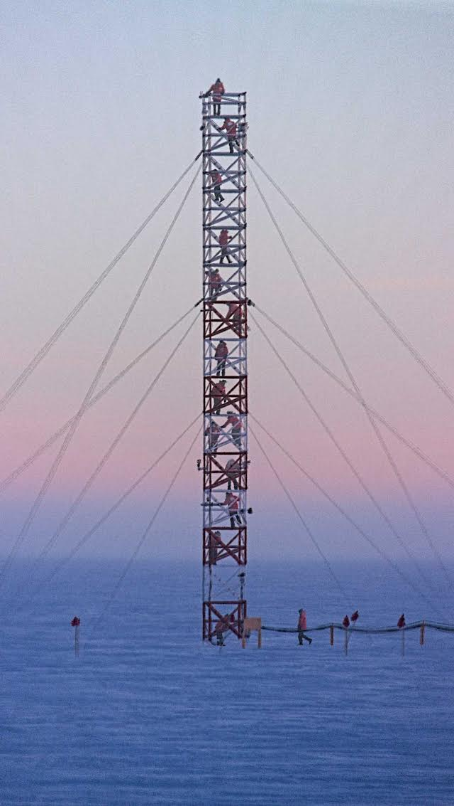 Mike walks out to the observatory (top) and Mike climbs the tower (bottom). The tower is located a short walk away from the observatory. On it are meteorology instruments at a few different heights, as well as air inlet lines that run to instruments in the observatory. Each week, either Mike or I climb the tower to check on the instruments and inlet lines, as well as clear off the snow and ice that has built up over time. At 30 meters (98 feet) tall, the tower provides a great view of the neighborhood from the top. 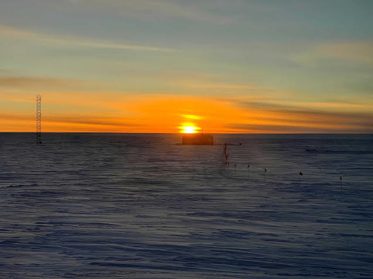 A low sun behind the observatory. On March 23rd, the South Pole saw the only sunset of the year. Well, actually that's not true, the sun unfortunately set behind an overcast layer of clouds. For the next six months, the sun will remain below the horizon until the only sunrise of the year takes place in September. To celebrate the important occasion, the station got together for a fancy sunset dinner. The chefs made a wonderful meal, with a cocktail hour and live music beforehand. 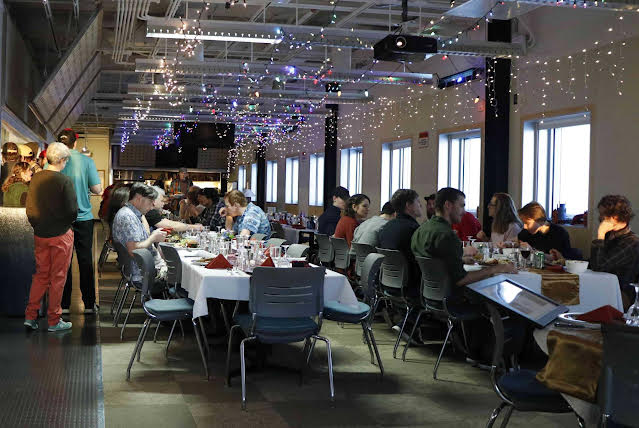 The galley during sunset dinner. With the sun having set, the best way to describe the mood on the station is it feels like we are being lulled to sleep. Each day the sky is only getting darker, recreation events are becoming less full of people, and I for one am sleeping much more. In a way, we are all settling in for hibernation. We keep the station running and the science going, but life here is quieter. I am sure that the station will continue to quiet down as the winter further sets in. Our next big milestone will be midwinter, which is the halfway point between the sunset and sunrise. 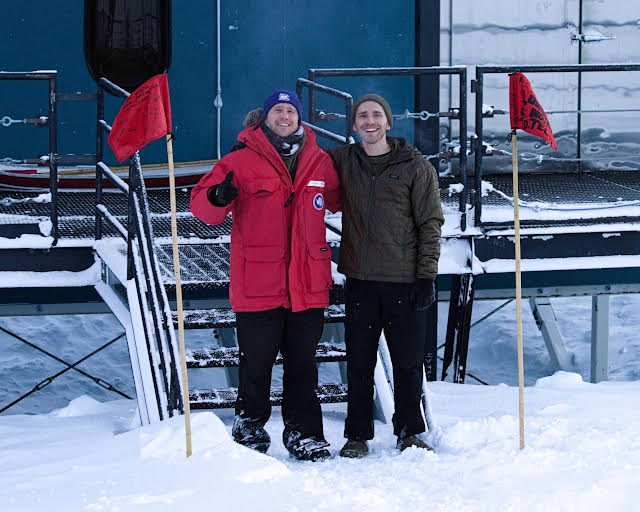 Me and Mike in front of the observatory on the day of the sunset. (M. Yoder) As the winter sets in, spirits here are high. We are excited for the night sky, which will bring the stars and aurora with it. Take care, Luke 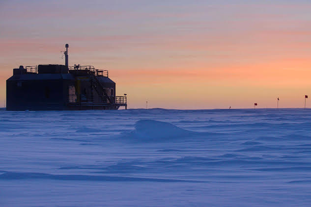 ------------------------------ ------------------------------ Previous newsletters can be found on my website. |